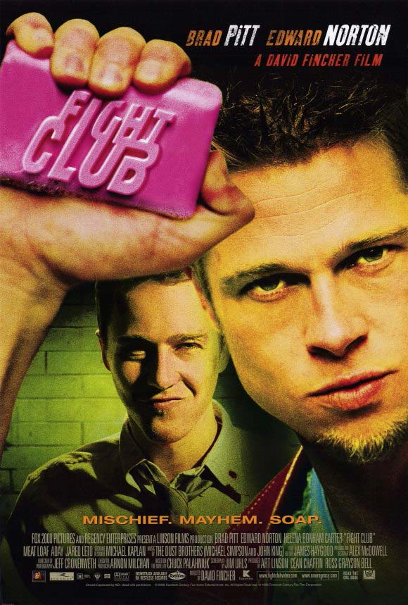
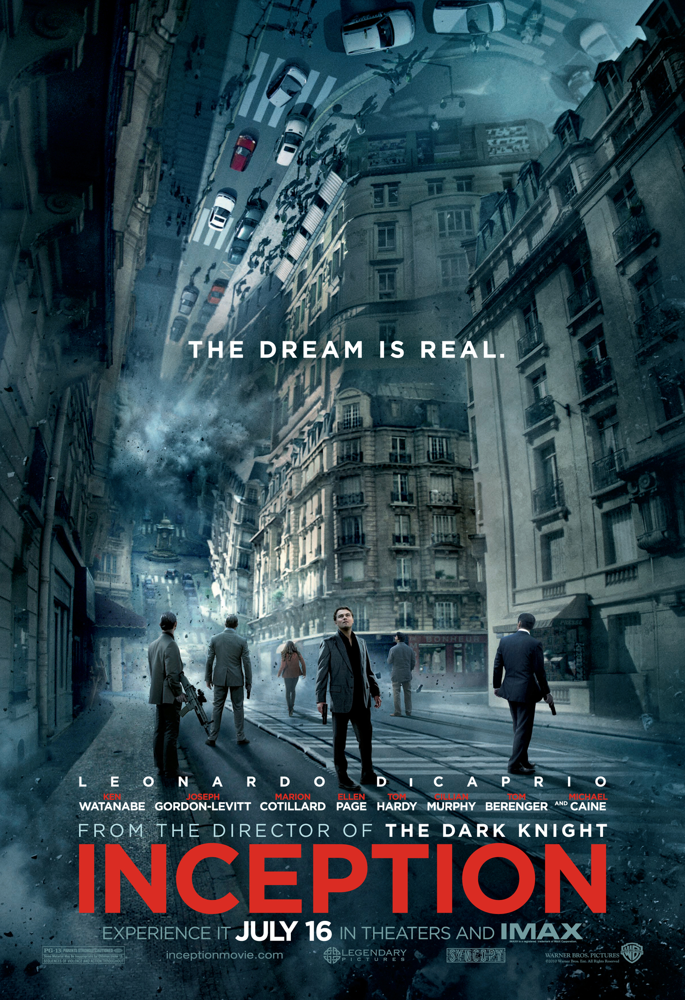
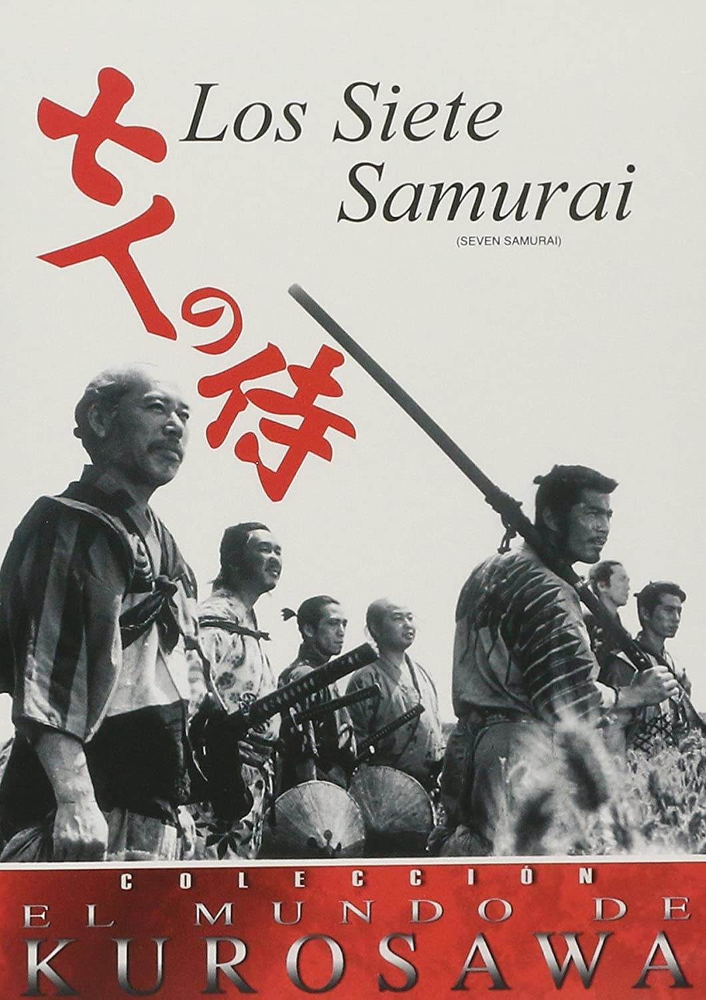

Nominaciones y Reconocimientos en los Óscar
En la anterior sección de nuestro sitio web ya vimos cuales son las películas a las que hemos hecho referencia en nuestro titulo. Todas estas peliculas las consideramos bien criticadas por IMDB, debido a que hemos visto algunas y opinamos de manera similar, tambien creemos que son bien criticadas por el hecho de que han sido nominadas en su tiempo a más de una categoria de la prestigiosa acdemia de los premios Óscar y estas han sido laureadas.
Cadena Perpetua

Nominaciones:
Mejor pelicula, mejor actor, mejor guión adaptado, mejor fotografía, mejor montaje, mejor sonido, y mejor banda sonora.
Reconocimientos:
Apesar de estar nominada a 7 categorias, Cadena Perpetua no se llevó ningún Óscar.
El Padrino

Nominaciones:
Mejor pelicula, mejor director, mejor actor, mejor actor de reparto, mejor actor de reparto, mehor guión adaptado, mejor dirección de fotografía, mejor montaje, mejor diseño de producción, mejor banda sonora original, mejor canción original.
Reconocimientos:
Mejor película, mejor director, mejor actor, ejor guión adaptado
Batman:El caballero de la noche
Nominaciones:
Mejor actore de reparto, mejor edición, mejor dirección de fotografía, mejor dirección de artística, mejor maquillaje, mejor edición de sonido y mejores efectos visuales.
Reconocimientos:
Mejor actor de reparto
El Padrino 2

Nominaciones:
Mejor película, mejor director, mejor actor de reparto, mejor guión adaptado, mejor actor, mejor dirección de fotografía, mejor diseño de producción, mejor edición, mejor banda sonora original.
Reconocimientos:
Mejor película, mejor director, mejor actor de reparto y mejor guión adaptado.
12 hombres sin piedad

Nominaciones:
Mejor película, mejor director, mejor guión adaptado y mejor fotografía en blanco y negro.
Reconocimientos:
No ganó ninguna categoria
La lista de Schindler

Nominaciones:
Mejor película, mejor director, mejor actor, mejor actor de reparto, mejor guión adaptado, mejor fotografía, mejor diseño de producción, mejor edición, mejor banda de sonido original, mejor sonido, mejores efectos de sonido, mejor vesturio, mejor maquillaje
Reconocimientos:
Mejor pelicula, mejor director, mejor guión adaptado, mejor fotografía, mejor diseño de producción y mejor edición.
El Señor de los anillos:El retorno del Rey

Nominaciones:
Mejor película, mejor director, mejor guión adaptado, mejor montaje, mejor dirección de arte, mejor diseño de vestuario, mejor maquillaje, mejor sonido, mejores efectos visuales, mejor banda sonora original y mejor canción original
Reconocimientos:
Ganó absolutamente todas las categorias a las que fue nomnada (11), mr. papeador.
Pulpfiction
Nominaciones:
Mejor pelicula, mejor director, mejor actor, mejor actor de reparto, mejor actriz de reparto, mejor guión original y mejor montaje
Reconocimientos:
Mejor guión original.
El Señor de los anillos:La comunidad del anillo

Nominaciones:
Mejor película, mejor director, mejor guión adaptado, mejor fotografía, mejor dirección de arte, mejor diseño de vestuario, mejor montaje, mejor banda sonora original, mejor canción original y mejores efectos visuales
Reconocimientos:
Mejor ftografía, mejor banda sonora original y mejores efectos visuales.
El bueno, el feo y el malo

Nominaciones:
Mejor banda sonora original.
Reconocimientos:
No ganó
Forrest Gump

Nominaciones:
Mejor película, mejor director, mejor actor, mejor guión adaptado, mejor fotografía, mejor edición, mejor diseño de producción, mejor edición de sonido y mejores efectos visuales.
Reconocimientos:
Ganó todos a los que estuvo nominada excepto a mejor fotografía y mejor diseño de producción.
El club de la lucha
Nominaciones:
Mejor actor de reparto
Reconocimientos:
No ganó ningun premio
El Señor de los anillos:Las dos torres

Nominaciones:
Mejor edición, mejor sonido, mejores efectos visuales, mejor dirección de arte y mejor monatje de sonido.
Reconocimientos:
Mejor edición, mejor sonido y mejores efectos visuales
El Origen
Nominaciones:
Mejor película, mejor director, mejor guión original, mejor fotografía, mejor edición, mejor diseño de producción, mejor banda sonora original, mejor mezcla de sonido y mejores efectos visuales.
Reconocimientos:
Mejor fotografía, mejor edición, mejor diseño de producción y mejores efectos visuales.
Starwars:El imperio contrataca
Nominaciones:
Mejor mezcla de sonido, mejor banda sonora y mejor banda sonora original.
Reconocimientos:
Mejor mezcla de sonido
Matrix

Nominaciones:
Mejor montaje de sonido, mejores efectos especiales, mejor montaje, mejor mezcla de sonido.
Reconocimientos:
Mejor montaje de sonido, mejores efectos especiales, mejor monataje, mejor mezcla de sonido.
Uno de los nuestros

Nominaciones:
Mejor director, mejor actor de reparto, mejor actriz de reparto.
Reconocimientos:
Mejor actor de reparto.
Alguien vólo sobre el nido del cuco
Nominaciones:
Mejor película, mejor guión adaptado, mejor montaje, mejor fotografía, mejor banda sonora, mejor actor, mejor actriz, mejor actor de reparto, mejor dirección.
Reconocimientos:
Mejor película, mejor guión adaptado, mejor actor, mejor actriz, mejor dirección.
Seven
Nominaciones:
Mejor montaje
Reconocimiento:
No ganó su nominación.
Los Siete Samuráis
Nominaciones:
Mejor diseño de vestuario
Reconocimiento:
No ganó su categoria.
¡Qué bello es vivir!

Nominaciones:
Reconocimiento:
El silencio de los corderos

Nominaciones:
Mejor pelicula, mejor guión adaptado, mejor montaje, mejor mezcla de som¿nido, mejor actor, mejor actriz, mejor dirección.
Reconocimiento:
Mejor película, mejor guión adapatdo, mejor actor, mejor actriz, mejor dirección.
Rescatando al soldado Ryan

Nominaciones:
Mejor actor, mejor dirección, mejor diseño de producción, mejor fotografía, mejor montaje, mejor maquillaje, mejor banda sonora, mejor película, mejor mezcla de sonido, mejor montaje de sonido, mejor guión original./p>
Reconocimiento:
Mejor dirección, mejor fotografía, mejor montaje, mejor mezcla de sonido, mejor montaje de sonido.
Ciudad de Dios

Nominaciones:
Mejor fotografía, mejor montaje, mejor guión adaptado, mejor dirección.
Reconocimiento:
No ganó ningún Óscar
Interstellar

Nominaciones:
Mejor diseño de producción, mejor montaje de sonido, mejor banda sonora, mejores efectos especiales.
Reconocimiento:
A mejores efectos especiales.